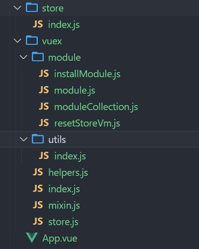

# Vuex 介绍
- Vuex 是一个专为 Vue.js 应用程序开发的状态管理模式 + 库。它采用集中式存储管理应用的所有组件的状态，并以相应的规则保证状态以一种可预测的方式发生变化。
- 详情查看：Vuex 是什么？ | Vuex (vuejs.org)
# 实现 Vuex 思路
-
首先 Vuex 是通过
Vue.use(vuex)，说明vuex是个插件，肯定是要install函数 -
同时会传入 Vue，因为 vuex 是离不开 Vue 的，或者说是为他量身打造的一个工具
-
其次每个组件都可以使用
$store，说明是挂载在每个组件上的，那么我们可以使用混入 (mixin)，在beforeCreate生命周期中混入是最好的 -
然后就是进行的一些列针对
Store的操作，其中最核心的是module，或者说vuex最核心的部分就是模块化了 -
那么根据 module 我们会创建一个类
(ModuleCollection)通过递归注册模块，形成树结构 -
最就是根据树结构我们会实现一个函数，通过递归来安装模块，其中会封装一写工具函数，或者封装类和类的公用方法
-
另外还会就是实现注册模块、vuex 的插件持久化，以及严格模式下 (strice:true) 只能通过 mutation 来更改状态等功能和一些辅助函数
- 最后放一张最终完成后的目录结构图

# mixin
- 这是第一步，给每个组件添加
$store属性，供所有组件都能使用
function vuexInit() { | |
const options = this.$options; | |
// 判断根组件是否有 store | |
if (options.store) { | |
// 根实例先添加 | |
this.$store = this.$options.store | |
} else if (options.parent && options.parent.$store) { | |
// 子组件拿到父组件的 store | |
this.$store = options.parent.$store; | |
} | |
} | |
const applyMixin = (Vue) => { | |
Vue.mixin({ | |
beforeCreate: vuexInit | |
}) | |
} | |
export default applyMixin |
# util
- 将工具函数抽取出来，使代码简洁明了点
// 这个函数功能会经常用到包括（模块的一些方法），所以在此封装成一个函数 | |
export const forEachValue = (obj, fn) => { | |
Object.keys(obj).forEach(key => fn(obj[key], key)) | |
} | |
// 根据路径获取最新的 state | |
export function getState(store, path) { | |
return path.reduce((newState, current) => { | |
return newState[current] | |
}, store.state) | |
} |
# module
- 封装的模块类，使每个类都能用到一些方法
import { forEachValue } from "../utils" | |
export default class Module { | |
constructor(rootModule) { | |
this._rawModule = rootModule | |
this._children = {} | |
this.state = rootModule.state | |
} | |
get namespaced() { // 属性访问器 | |
return this._rawModule.namespaced | |
} | |
getChild(key) { | |
return this._children[key] | |
} | |
addChild(key, module) { | |
this._children[key] = module | |
} | |
forEachMutation(fn) { | |
if (this._rawModule.mutations) { | |
forEachValue(this._rawModule.mutations, fn) | |
} | |
} | |
forEachAction(fn) { | |
if (this._rawModule.actions) { | |
forEachValue(this._rawModule.actions, fn) | |
} | |
} | |
forEachGetter(fn) { | |
if (this._rawModule.getters) { | |
forEachValue(this._rawModule.getters, fn) | |
} | |
} | |
forEachChild(fn) { | |
if (this._children) { | |
forEachValue(this._children, fn) | |
} | |
} | |
} |
# moduleCollection
- 递归注册模块，形参树结构
import { forEachValue } from "../utils"; | |
import Module from "./module"; | |
export default class ModuleCollection { | |
constructor(options) { | |
this.register([], options) | |
} | |
// 注册模块 递归注册 根模块 | |
register(path, rootModule) { | |
// 创建 Module 类的实例，Module 类中封装了许多方法 | |
let newModule = new Module(rootModule) | |
// 把当前要注册的模块上做了一个映射 | |
rootModule.rawModule = newModule | |
if (path.length === 0) { | |
// 刚开始肯定是没有 path 肯定是不存在的，所有添加一个 root 属性存入根模块 | |
this.root = newModule | |
} | |
else { | |
// 例如：['a', 'b', 'c'] 这种路径形式，代表 a 模块中有 b 模块，b 模块中有 c 模块 | |
// 那么其作用就是 c 应该在 b 模块中，所有 slice (0,-1) 拿到除最后一个的数组即 ['a','b'] | |
// 通过 reduce 取到 b 模块，再将 c 模块放入 b 模块中 | |
let parent = path.slice(0, -1).reduce((module, key) => module.getChild(key) | |
, this.root) | |
parent.addChild([path[path.length - 1]], newModule) | |
} | |
// 如果有 modules，说明有子模块进行递归注册 | |
if (rootModule.modules) { | |
forEachValue(rootModule.modules, (module, moduleName) => { | |
this.register([...path, moduleName], module) | |
}) | |
} | |
} | |
// 获取命名空间 | |
getNamespace(path) { | |
let root = this.root | |
// 根据 path 不断拿到对于模块查看是否有 namespace 属性 | |
return path.reduce((namespace, key) => { | |
root = root.getChild(key) // 不断拿到子模块 | |
//// 有的话拼接上作为地址 | |
return namespace + (root.namespaced ? key + '/' : '') | |
}, '') | |
} | |
} |
# installModule
- 递归安装模块及 Store 传入的 options
import Vue from 'vue' | |
import { getState } from '../utils' | |
export default function installModule(store, rootState, path, module) { | |
// 注册事件时 需要注册到对应的命名空间中 path 就是所有的路径 根据 path 算出一个空间里 | |
let namespace = store._modules.getNamespace(path) | |
if (path.length > 0) { | |
let parent = path.slice(0, -1).reduce((state, current) => { | |
return state[current] | |
}, rootState) | |
store._withCommitting(() => { | |
Vue.set(parent, path[path.length - 1], module.state) | |
}) | |
} | |
module.forEachMutation((mutation, type) => { | |
store._mutations[namespace + type] = (store._mutations[type] || []) | |
store._mutations[namespace + type].push((payload) => { | |
store._withCommitting(() => { | |
mutation.call(store, getState(store, path), payload) | |
}) | |
store._subscribers.forEach(sub => sub({ mutation, type }, store.state)) | |
}) | |
}) | |
module.forEachAction((action, type) => { | |
store._actions[namespace + type] = (store._actions[type] || []) | |
store._actions[namespace + type].push((payload) => { | |
action.call(store, store, payload) | |
}) | |
}) | |
module.forEachGetter((getter, key) => { | |
store._wrappedGetters[namespace + key] = function (params) { | |
return getter(getState(store, path)) | |
} | |
}) | |
module.forEachChild((child, type) => { | |
installModule(store, rootState, path.concat(type), child) | |
}) | |
} |
# resetStoreVm
- 将状态都挂载到 Vue 实例中，数据响应式
import { forEachValue } from "../utils" | |
import Vue from "vue" | |
export default function resetStoreVm(store, state) { | |
const wrappedGetters = store._wrappedGetters | |
let oldVm = store._vm | |
let computed = {} | |
store.getters = {} | |
//computed 缓存效果 当 computed 中值发送变化时再次订阅 | |
forEachValue(wrappedGetters, (fn, key) => { | |
computed[key] = function () { | |
return fn() // 将 getters 对应 key 的函数调用 | |
} | |
Object.defineProperty(store.getters, key, { | |
get: () => store._vm[key] // 读取时在 vm 上拿 | |
}) | |
}) | |
// 创建 Vue 实例实现数据响应式 | |
store._vm = new Vue({ | |
data: { | |
$$state: state | |
}, | |
computed | |
}) | |
if (store.strict) { | |
console.log(store.strict); | |
// 状态一变化就会立即执行 | |
store._vm.$watch(() => store._vm._data.$$state, () => { | |
console.assert(store._committing, '在mutation之外更改了状态'); | |
}, { deep: true, sync: true }) // 深度 同步 | |
} | |
if (oldVm) Vue.nextTick(() => oldVm.$destroy()) | |
} |
# class store
- 这是针对 Store 的类
import applyMixin from './mixin' | |
import { forEachValue, getState } from './utils' | |
import ModuleCollection from './module/moduleCollection' | |
import installModule from './module/installModule' | |
import resetStoreVm from './module/resetStoreVm' | |
let Vue | |
class Store { | |
constructor(options = {}) { | |
this._modules = new ModuleCollection(options) | |
this._mutations = {} // 存放所有模块中的 mutations | |
this._actions = {} // 存放所有模块中的 actions | |
this._wrappedGetters = {} // 存放所有模块中的 getters | |
this._subscribers = [] // 存放订阅的插件 | |
this.strict = options.strict // 严格模式 | |
this._committing = false // 同步的 watcher | |
let state = this._modules.root.state // 根模块 state | |
installModule(this, state, [], this._modules.root) | |
// 将状态放到 vue 的实例中 | |
resetStoreVm(this, state) | |
options.plugins.forEach(plugin => plugin(this)) | |
} | |
// | |
_withCommitting(fn) { | |
let committing = this._committing | |
this._committing = true // 在函数调用前标识_committing 为 true | |
fn() | |
this._committing = committing | |
} | |
// 用于持久化保存数据替换原数据的方法 | |
replaceState(newState) { | |
this._vm._data.$$state = newState | |
} | |
// 订阅收集 | |
subscribe(fn) { | |
this._subscribers.push(fn) | |
} | |
// commit | |
commit = (type, payload) => { | |
this._mutations[type].forEach(fn => fn(payload)) | |
} | |
// dispatch | |
dispatch = (type, payload) => { | |
this._actions[type].forEach(fn => fn(payload)) | |
} | |
// 类的属性访问器 | |
get state() { | |
return this._vm._data.$$state | |
} | |
// 动态注册 | |
registerModule(path, rawModule) { | |
if (!Array.isArray(path)) path = [path] | |
// 注册模块 | |
this._modules.register(path, rawModule) | |
// 安装模块 并动态将状态新增上去 | |
installModule(this, this.state, path, rawModule.rawModule) | |
// 重构数据响应式 | |
resetStoreVm(this, this.state) | |
} | |
} | |
const install = (_Vue) => { | |
Vue = _Vue | |
applyMixin(Vue) | |
} | |
export default { | |
Store, | |
install | |
} | |
export { | |
Store, | |
install | |
} |
# 实现持久化插件 & Store 数据
- 实现持久化插件，放入到
plugins数组中 subscribe只要状态变了就会执行
import Vue from 'vue' | |
import Vuex from '../vuex' | |
// import Vuex from 'vuex' | |
// import logger from 'vuex/dist/logger' | |
// 持久化插件 | |
function persists(store) { | |
let local = localStorage.getItem('VUEX:STATE') | |
if (local) { | |
store.replaceState(JSON.parse(local)) | |
} | |
store.subscribe((mutation, state) => { | |
// 只要频繁操作 就要考虑防抖和节流 | |
localStorage.setItem('VUEX:STATE', JSON.stringify(state)) | |
}) | |
} | |
Vue.use(Vuex) | |
const store = new Vuex.Store({ | |
strict: true, // 严格模式下，只能通过 mutation 来更改状态 | |
plugins: [ | |
persists, | |
// logger() | |
], | |
state: { | |
name: 'lain', | |
age: 16, | |
count: 0 | |
}, | |
getters: { | |
addCount({ count }) { | |
// console.log("".concat(state.name, "123").concat(state.age)); | |
// return `${state.name}123${state.age}` | |
// return "".concat(state.name); | |
// return "".concat(state.name, 123).concat(state.age); | |
return count++ | |
} | |
}, | |
mutations: { | |
changeAge(state, payload) { | |
state.age += payload | |
}, | |
redAge(state, payload) { | |
state.age -= payload | |
} | |
}, | |
actions: { | |
redAge(ctx, payload) { | |
setTimeout(() => { | |
ctx.commit('redAge', payload) | |
}, 300) | |
} | |
}, | |
}) | |
export default store |
# 实现辅助函数 (helpers)
- vuex 提供了一些非常方便的辅助函数，比如 mapState、mapGetter、mapMutation、mapAction
- 下面来实现一下这些辅助函数，只要明白一个原理其余都是类似的
export const mapState = arrList => { | |
const obj = {}; | |
for (let i = 0; i < arrList.length; i++) { | |
obj[arrList[i]] = function () { | |
return this.$store.state[arrList[i]]; | |
}; | |
} | |
return obj; | |
}; | |
export const mapGetters = arrList => { | |
const obj = {} | |
for (let i = 0; i < arrList.length; i++){ | |
obj[arrList[i]] = function () { | |
return this.$store.getters[arrList[i]] | |
} | |
} | |
return obj | |
} | |
export const mapMutations = arrList => { | |
const obj = {} | |
for (let i = 0; i < arrList.length; i++){ | |
obj[arrList[i]] = function (payload) { | |
return this.$store.commit(arrList[i], payload) | |
} | |
} | |
console.log(obj); | |
return obj | |
} | |
export const mapActions = arrList => { | |
const obj = {} | |
for (let i = 0; i < arrList.length; i++){ | |
obj[arrList[i]] = function (payload) { | |
return this.$store.dispatch(arrList[i], payload) | |
} | |
} | |
return obj | |
} |
# index
- 最终统一导出
import { mapState, mapGetters, mapMutations, mapActions } from "./helpers"; | |
import { Store, install } from "./store"; | |
export default { | |
Store, | |
install, | |
mapState, | |
mapGetters, | |
mapMutations, | |
mapActions | |
} | |
export { | |
Store, | |
install, | |
mapState, | |
mapGetters, | |
mapMutations, | |
mapActions | |
} |
- 那么 Vuex 的实现也告辞段落，下面进行简单测试，其余的模块或者命名空间等可以自行测试
# 测试 App
<template> | |
<div id="app"> | |
<h2>年龄: {{ $store.state.age }}</h2> | |
<h2>姓名：{{ $store.state.name }}</h2> | |
<h2>age: {{ age }}</h2> | |
<h2>addCount: {{ addCount }}</h2> | |
<button @click="changeAge(1)">changeAge</button> | |
<button @click="redAge(1)">redAge</button> | |
</div> | |
</template> | |
<script> | |
import { mapState, mapGetters, mapMutations, mapActions } from "./vuex"; | |
export default { | |
name: "App", | |
computed: { | |
...mapState(["age"]), | |
...mapGetters(["addCount"]), | |
}, | |
methods: { | |
...mapMutations(["changeAge"]), | |
...mapActions(["redAge"]), | |
}, | |
}; | |
</script> | |
<style></style> |